Stick gauche (ou D-pad, ou flèches, ou glisser le stick tactile gauche pendant l'appui) au moment du coup d'arme. Le stick droit reste au selecteur de spécial. Nunchaku et sabre directionnel gardent leurs propres variantes.
| Direction | Variante | Gagne | Perd |
|---|---|---|---|
| Avant | Estoc (coup 6) | Allonge +15 %, pousse | Pas de chainage |
| Haut | Frappe montante | Lance en l'air | Allonge -10 %, lent a revenir |
| Bas | Balayage | Touche les cibles basses, fait trebucher | Dégâts -20 %, long a revenir |
| Avant + haut | Oblique haute | Allonge et dégâts +5 % | Un peu plus lent |
| Avant + bas | Oblique basse | Allonge +5 %, étourdit un peu plus | Dégâts -5 %, recuperation +3 |
Les animations reutilisent les poses cles existantes (estoc, coup montant, balayage, coupe oblique) : aucune animation dessinee en plus. Un test verifie, pour chaque héros, chaque arme et chaque variante, qu'aucun coude ni genou ne se retourne.
GIF du vrai moteur (scène objets, batte en main, mannequin devant) : une variante par image animée.
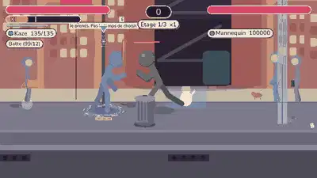
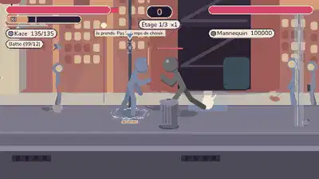
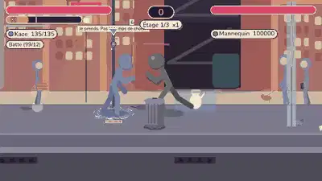
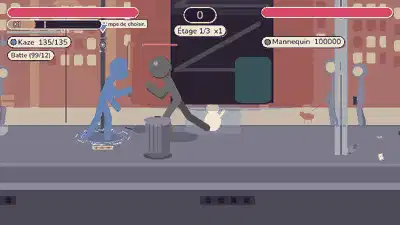
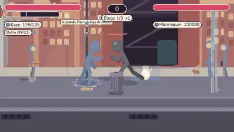
Deux bâtons reliés par une chaîne : le bout est une vraie masse retenue par une corde (inertie, gravité), déterministe et dans l'empreinte de simulation. Il touche tout ce qu'il traverse (jusqu'à 4 touches par coup, immunité de 20 images par cible), et les dégâts croissent avec sa vitesse (de 1,5 à 5, jamais au-dessus du fouet). Portée comparable au fouet (plafond 150). Jetable et cassable comme les autres armes, usure visible.
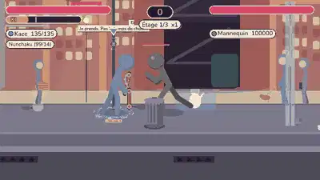
Quatre coups propres à chaque héros, un geste dessiné chacun (poses clés dans le moteur) : Avant + Haut + Poing crochet montant (le poing part de la hanche et monte en arc), Avant + Bas + Poing crochet bas au corps (buste plongé, poing vers le bas), Avant + Haut + Pied pied oblique haut (croissant), Avant + Bas + Pied pied oblique bas (fente basse). Haut seul reste le lanceur (projette en l'air), Bas seul le coup bas / balayage ; sans direction, la série poing / pied est inchangée.
Tous les coups partent de la même garde et y reviennent : l'enchaînement poing, pied, poing, diagonale, pied n'a ni saccade ni membre qui saute (test par héros : coude et genou jamais inversés, pose de début et de fin proche de la garde). Une diagonale tapée en plein combo libre remplace la suite normale. Un arc discret devant le héros indique la direction tenue (haut, bas, avant, diagonales) avant l'appui.
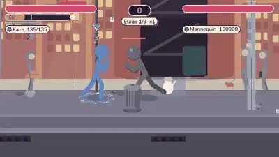
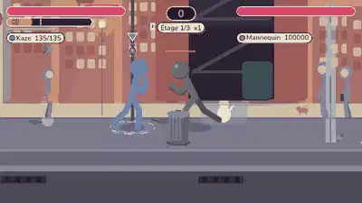
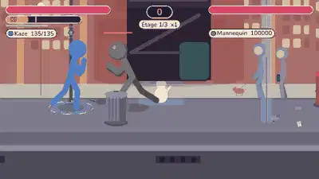
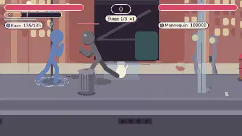
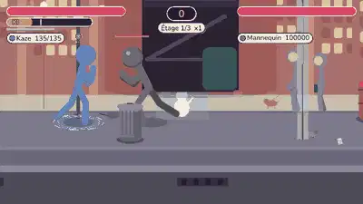
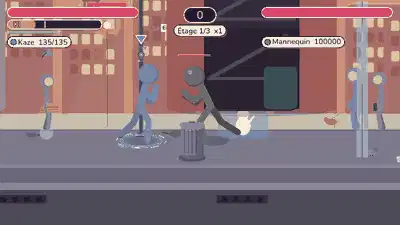
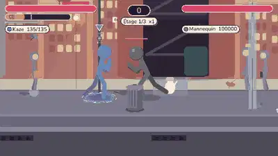
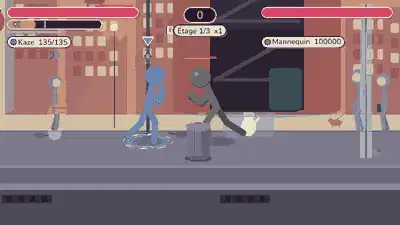